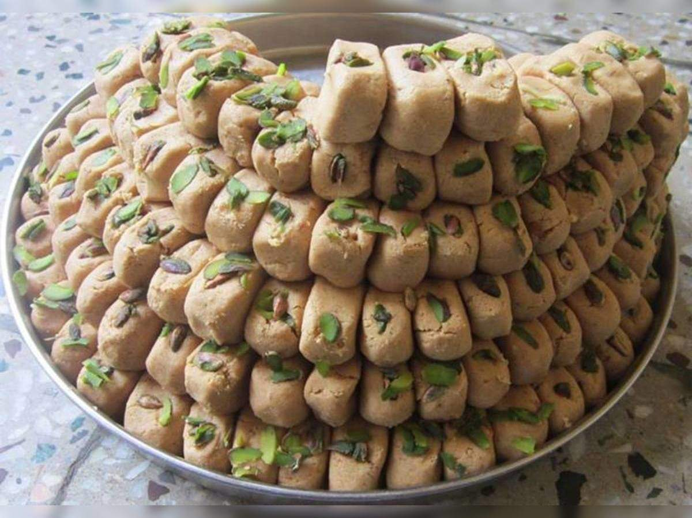
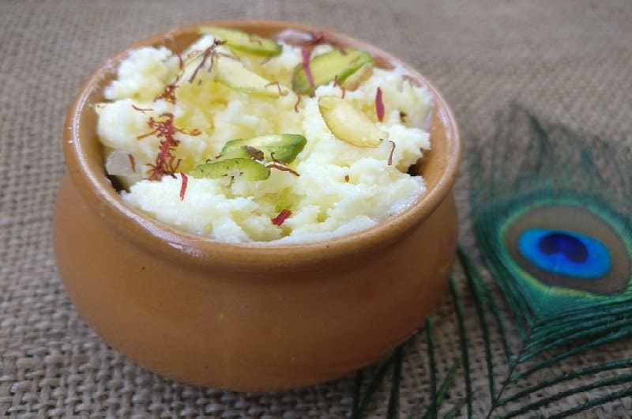
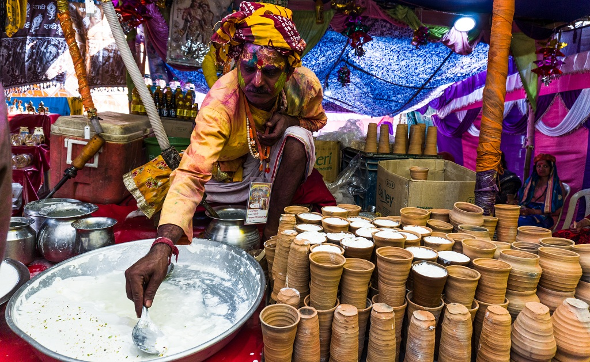
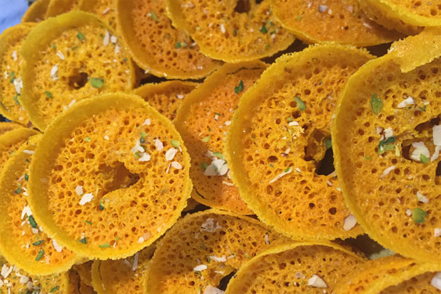
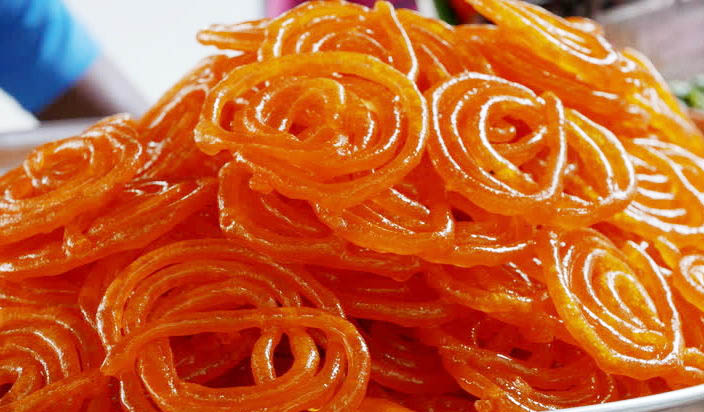
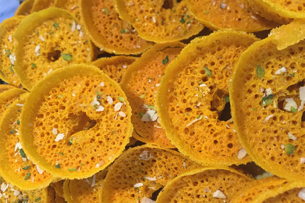
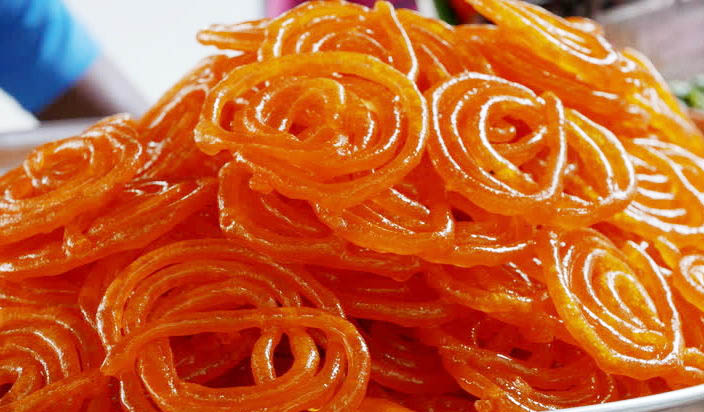
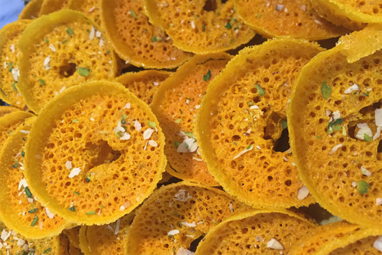
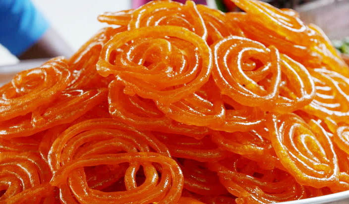

Being one of the holy cities of India, Mathura is devoid of any kind of non-vegetarian food. Food here are mostly satvik (devoid of onion, garlic) (devoid of onion, garlic). As makhan (white butter) is supposed to be Lord Krishna's favourite snack, milk and milk products form extensive part of the delicacies of this city.



 





Peda
When it comes to Mathura meals, the first item that comes to mind is Peda. The peda sweet is known by the brand name Mathura. It is prepared for Lord Krishna as a bhog (offering). It's a creamy caramelised milk reduction with a hint of cardamom and ghee that gives the sweet a rich flavour.
Makhan Mishri
Lord Krishna is also known as'makhan chor,' which gives rise to the word makhan mishri. Makhan mishri (sweetened white butter) is white butter served in a tiny earthen pot with mishri (sugar candy) on top. Mother Yashoda is said to have fed her Balgopal his favourite makhan mishri every day.
Kachori and Jalebi
If you're visiting Mathura, kachori and jalebi are a must-try. These flat kachoris are drenched in desi ghee and served with aloo ki sabzi (potato curry). The intense hing (asafoetida) flavour in the kachoris is the nicest part. Without crispy, hot jalebis drizzled in syrup, this spicy kachori delight is incomplete.
Ghewar
You might not be able to get ghewar for the entire year. During the monsoon season, it is prepared. Ghewar is a sugar-soaked disc-shaped sweet cake made with maida (all-purpose flour). Mathura's Ghewar is distinguished by its layers of malai and dry fruits.
Lassi
Mathura's food is dominated by milk, whether in its natural state or as a product. If you're lactose-intolerant, kadhai wale doodh will be heaven for you. It's just milk that's been boiled all day in an iron kadhai and then topped with a coating of malai. Rabri is another popular Mathura delicacy. It consists of condensed milk served in an earthen pot with kesar, spices, and nuts. The link between rabri and jalebi is unbreakable. And, of course, when it comes to milk products, we can't forget about lassi, a glass of bliss with a generous helping of rich malai. After drinking a glass of lassi, make sure you have a milk moustache on your face.